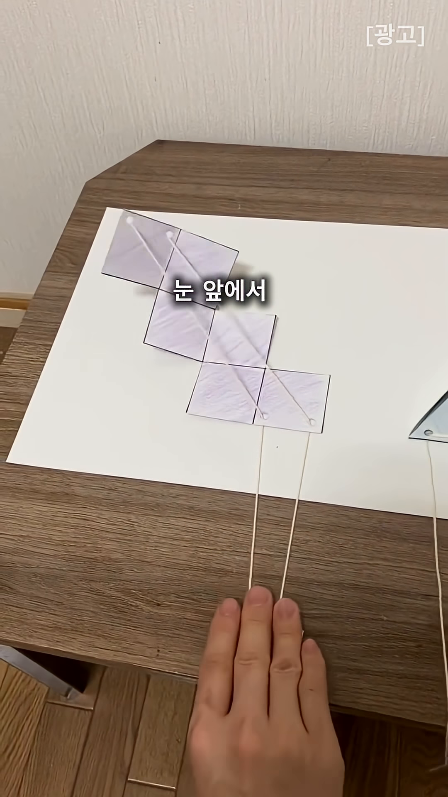
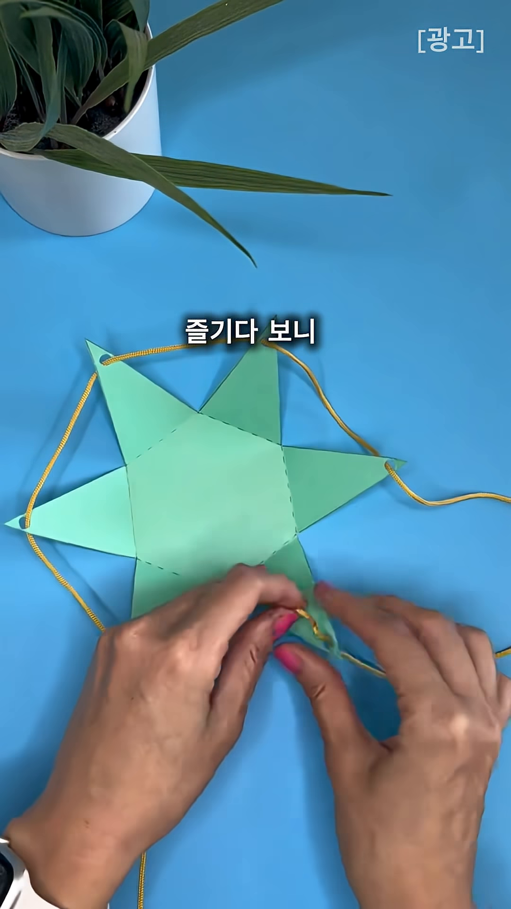
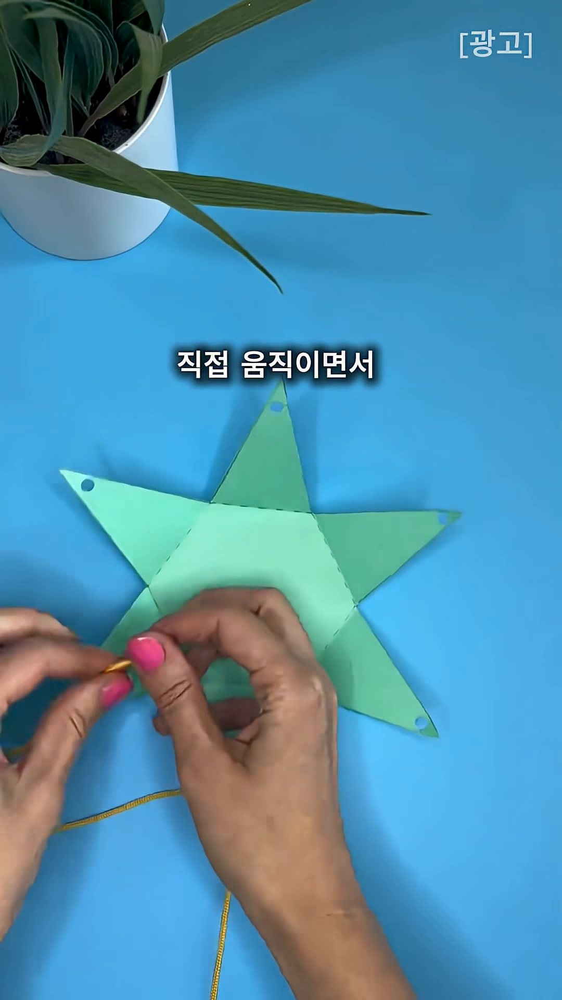
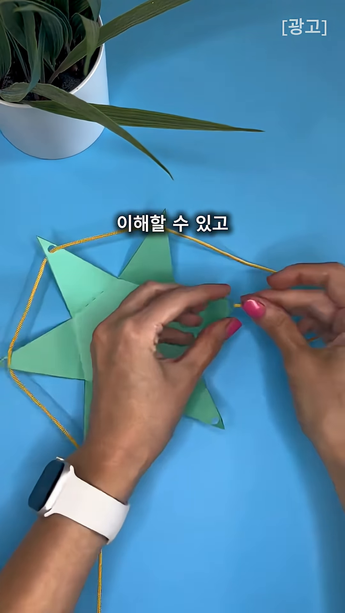
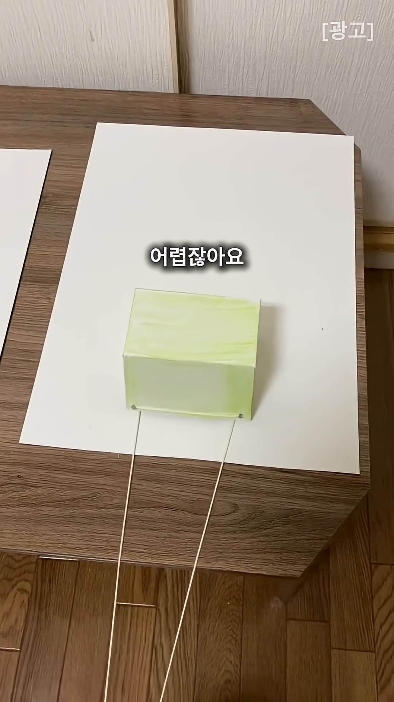

정육면체 / 직육면체
초등 5-26개의 정사각형 면이 모서리를 축으로 순차적으로 90°씩 접히며 완벽한 정육면체가 됩니다.
8 - 12 + 6 = 2
모든 볼록 다면체에서 항상 성립하는 기하학의 황금 법칙입니다.
"옆면 직사각형 가로 = 밑면 원둘레"
반지름 $r = 2.5\text{cm}$일 때 둘레는 약 15.71cm입니다.
전체 가로 18cm 중 2.29cm는 종이가 둥글게 겹쳐지는 오버랩 마진과 펀칭 구멍의 유격입니다.
- 꼭짓점 타공: 모여야 하는 꼭짓점에 실을 꿰어 거리를 0으로 수렴
- 스코어링: 쇠자와 볼펜으로 접는 선을 내어 한쪽으로만 절곡 유도
- 바닥 고정면: 1개 밑면만 바닥에 고정해 인장력의 지지대 역할
부모 & 교사를 위한 4단계 놀이 학습 코칭
단순 주입식 암기가 아닌, 상상하고 직접 관찰하며 손으로 증명하는 공간지각력 훈련
💬 코칭 가이드: 실을 당기기 전, 펼쳐진 도안을 보며 "이 실을 당기면 어떤 입체 모양이 될까? 어느 면끼리 마주볼까?"를 먼저 머릿속에서 시뮬레이션하도록 유도하세요.
실전 핸즈온 DIY 제작 가이드
실제 종이와 실로 교구를 직접 만들어보는 5단계 프로세스와 실패 방지 노하우
준비물 체크리스트 (Materials)
브라우저 자동저장제작 시 실패 방지를 위한 4대 핵심 노하우
펀칭 전 구멍 뚫릴 위치 앞뒤에 스카치 투명 테이프를 붙인 뒤 펀칭하면 아이가 세게 잡아당겨도 절대 찢어지지 않습니다.
실이 빠져나오는 바닥판 쪽에도 구멍을 하나 뚫어 실을 아래로 유도하면 수평으로 당겨도 전개도가 똑바르게 솟아오릅니다.
거친 마끈이나 굵은 털실 대신 표면이 매끄러운 면사나 왁스코드를 써야 구멍 마찰이 줄어들어 한 손으로도 부드럽게 팝업됩니다.
칼날을 쓰면 종이가 잘려나가므로, 반드시 잉크 다 쓴 볼펜이나 쇠자 모서리로 종이 섬유를 눌러주는 선에서 작업합니다.
5단계 표준 제작 프로세스 (Step-by-Step)

정밀 제도 및 외곽선 재단
도안을 정확한 치수로 그린 후 외곽선은 가위나 칼로 정밀하게 오려냅니다.

스코어링 (접는 선 누름선)
모든 접히는 선에 쇠자를 대고 다 쓴 볼펜으로 2~3회 강하게 눌러 선을 냅니다.

꼭짓점 타공 (Punching)
모서리/꼭짓점에서 안쪽으로 3~5mm 지점에 1공 펀치로 구멍을 뚫습니다.

실 꿰기 경로 설계
실을 구멍들에 지그재그 또는 대칭 경로로 뀁니다. 한쪽 끝은 매듭지어 고정합니다.

바닥판 부착 & PULL 탭
기준 밑면 1개만 바닥에 양면테이프로 부착하고, 실 끝에 'PULL' 라벨을 답니다.
초등학교 수학 교육과정 연계표 (초등 3~6학년)
초등 수학 교과서 단원별 학습 목표와 당김 교구가 가져오는 입증된 학습 효과
| 학년/학기 | 해당 단원 | 주요 학습 목표 | 당김 교구의 학습 효과 |
|---|---|---|---|
| 초등 3학년 1학기 | 2단원. 평면도형 | 선분, 직선, 각, 직각삼각형, 직사각형, 정사각형의 구성 요소 이해 | 평면의 선분과 각이 모여 입체로 일어서는 차원 변환 체험 |
| 초등 5학년 2학기 | 5단원. 직육면체 ★오답률 1위 | 직육면체·정육면체의 겨냥도 및 전개도 그리기, 마주보는 면 찾기 | 마주보는 면과 만나는 모서리를 실로 직접 닫아보며 실시간 검증 |
| 초등 6학년 1학기 | 2단원. 각기둥과 각뿔 | 각기둥과 각뿔의 밑면과 옆면 분석, 다양한 전개도 펼치기/접기 | 삼각기둥, 오각뿔 등의 전개도가 꼭짓점 한곳으로 모이는 수렴 원리 체득 |
| 초등 6학년 2학기 | 6단원. 원기둥, 원뿔, 구 | 원기둥의 전개도, 옆면의 가로 길이와 밑면의 원주(둘레) 관계 | 직사각형이 말려 원형 밑면을 감싸는 과정을 공식($2\pi r$)으로 체화 |